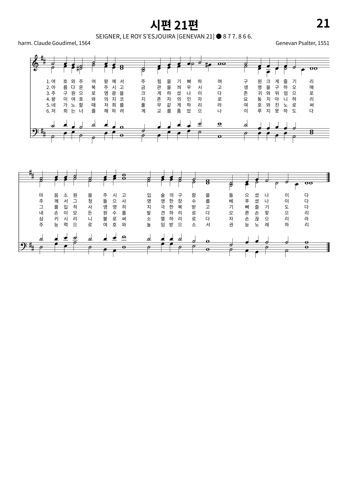

Psalm 21
SEIGNER, LE ROY S’ESJOUIRA [GENEVAN 21] · 8 7 7. 8 6 6.
English title: LORD, in Thy Strength the King Exults
Tune: Genevan Psalter, 1551 · Harmony: Claude Goudimel, 1564 · Lyrics: Korean adaptation of Psalm 21 from the Korean Revised Version (AI draft adaptation · not yet theologically reviewed) · 6 stanzas
Score PDF MusicXML (for printing) MusicXML (for accompaniment, with prelude and repeats) Read Psalm 21 (Korean Revised Version)
Score
← Psalm 20 ListAccompaniment (in preparation)Psalm 22A →
Lyrics (Korean)
Stanza 1
여호와 주여 왕께서
주 힘을 기뻐하며
구원 크게 즐기리
마음 소원을 주시고
입술의 구함을
들으셨나이다
여호와 주여 왕께서
주 힘을 기뻐하며
구원 크게 즐기리
마음 소원을 주시고
입술의 구함을
들으셨나이다
Stanza 2
아름다운 복 주시고
금관을 씌우시고
생명을 구하오매
주께서 그 청 들으사
영영한 장수를
베푸셨나이다
아름다운 복 주시고
금관을 씌우시고
생명을 구하오매
주께서 그 청 들으사
영영한 장수를
베푸셨나이다
Stanza 3
주 구원으로 영광을
크게 하셨나이다
존귀와 위엄으로
그를 입히사 영영히
지극한 복 받고
기뻐 즐기도다
주 구원으로 영광을
크게 하셨나이다
존귀와 위엄으로
그를 입히사 영영히
지극한 복 받고
기뻐 즐기도다
Stanza 4
왕이 여호와 의지코
지존자의 인자로
요동치 아니하리
네 손이 모든 원수를
발견하리로다
오른손 찾으리
왕이 여호와 의지코
지존자의 인자로
요동치 아니하리
네 손이 모든 원수를
발견하리로다
오른손 찾으리
Stanza 5
네가 노할 때 저희를
풀무 같게 하리라
여호와 진노로써
삼키시리니 불로써
소멸하리로다
자손 끊으리라
네가 노할 때 저희를
풀무 같게 하리라
여호와 진노로써
삼키시리니 불로써
소멸하리로다
자손 끊으리라
Stanza 6
저희는 너를 해하려
계교를 품었으나
이루지 못하도다
주 능력으로 여호와
높임 받으소서
권능 노래하리
저희는 너를 해하려
계교를 품었으나
이루지 못하도다
주 능력으로 여호와
높임 받으소서
권능 노래하리